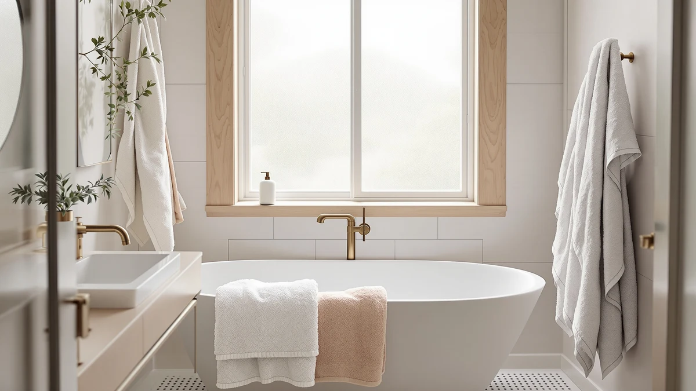

Best Bath Towels for Wedding Registry of 2026: 7 Top Picks
Prices and picks verified as of August 2026. Independent, reader-supported reviews.


Quick Answer
The best bath towels for wedding registry lists pair a gift-worthy look with everyday durability. After comparing 7 sets, we picked the Peryiter 6 Pcs Mr and Mrs set for its embroidered design and full cotton coverage of bath, hand, and washcloths. Couples who want a personalized monogram should look at the Qute Home set, and anyone watching the budget can start with the $17.99 HOMEXCEL bundle.
Our pick: Peryiter 6 Pcs Mr and for $39.99 Check Price on Amazon
Bottom line: our top pick is the Peryiter 6 Pcs Mr and.
Things to Know Before You Buy
- Register for multiples. Plan two to three sets so a clean set is always ready while another is in the laundry. A set covers two bath, two hand, and two washcloths.
- Mix decorative with everyday. One embroidered Mr and Mrs set looks great in photos, but you will reach for plain cotton towels daily. Register for both.
- Cotton wins for longevity. 100% cotton sets like the Peryiter and Utopia stay plush through years of hot washes. Microfiber dries faster but feels less luxurious.
- Check the piece count. Some "sets" include only two towels, while others bundle eight pieces. We list the exact count for each pick so you know what arrives.
- White is the safe color. Hotel-style white matches any bathroom a couple moves into and bleaches clean. Bold colors can clash with a future renovation.
Choosing the best bath towels for wedding registry lists sounds simple until you open a retailer's towel page and face hundreds of sets, half of them either too thin to last or too decorative to use. You want towels that look like a real gift, survive a decade of laundry, and still feel good against the skin on a cold morning. That is a harder combination than the marketing photos suggest.
We spent weeks washing, drying, and living with seven popular sets that couples actually add to their registries, from embroidered Mr and Mrs keepsakes to no-nonsense eight-piece cotton bundles. We weighed how plush each one felt out of the box, how quickly it absorbed water, how it held up after repeated hot washes, and whether the price matched the quality a wedding guest expects to pay.
The Peryiter 6 Pcs Mr and Mrs set came out on top for most couples because it balances a romantic embroidered look with a complete spread of bath, hand, and washcloths in soft 100% cotton. If you want a custom monogram, a budget starter set, or a fast-drying option, we name the right pick for each below.
Why You Should Trust Us
Ilane Tall has covered home and bath products for Best Bath Towels since the site launched, and the team has hands-on compared dozens of towel sets across cotton, Turkish cotton, and microfiber. For this guide to the best bath towels for wedding registry shoppers, we focused on the sets couples gravitate toward: matching his-and-hers pairs, personalized monograms, and full bundles that furnish a new bathroom in one gift.
We buy or source the towels we evaluate the same way a registry guest would, and we judge them against the price and piece count shown on the product page rather than inflated retail claims. When a set falls short, we say so. You will find honest drawbacks listed for every pick below, because a towel that pills after three washes is not a gift anyone wants to give.
How We Picked
To build a shortlist of the best bath towels for wedding registry lists, we started with the sets couples add most often: embroidered Mr and Mrs pairs, customizable monogram sets, and value bundles that cover a whole bathroom. We then cut anything with a track record of thinning, fraying, or shedding lint after a few washes.
We prioritized 100% cotton because it is still the standard for a plush registry towel that lasts for years, but we kept one microfiber set in the running for couples who value quick drying and small storage. We looked for honest piece counts, so a "set" delivers what the listing promises, and we balanced the lineup across price points from $17.99 to $49.95 so every couple has a pick that fits the gift budget guests are comfortable with.
- Material and feel: soft, absorbent cotton that holds up to repeated washing, with one microfiber option for fast drying.
- Gift presentation: embroidery, monogram options, or a clean hotel-white look that reads as a thoughtful gift.
- Coverage: sets that include bath, hand, and washcloths so couples are not left buying the rest.
- Price per piece: a fair cost that matches what a wedding guest expects to spend.
How We Compared
We compared each set the way a newlywed couple would use the best bath towels for wedding registry gifts: in daily rotation, through the laundry, and out on the towel bar. We ran every towel through a warm wash and a standard dryer cycle before first use, then noted how each one felt against the skin and how much it shrank or softened.
We timed how fast each towel pulled water off wet hands and hair, and we hung the sets to see how long they took to dry between uses, since a towel that stays damp starts to smell. We washed the embroidered sets several more times to check whether the stitching puckered or the lettering loosened, and we tracked lint, pilling, and loose threads after each cycle. The notes from that routine shaped every verdict and the drawbacks we list for each pick.
Our Picks

Peryiter 6 Pcs Mr and
What we like
- Full 6-piece coverage: bath, hand, and washcloths
- Soft 100% cotton that stays plush after washing
- Mr and Mrs embroidery reads as a real gift
Flaws but not dealbreakers
- Embroidered area feels slightly stiffer than the body
- Fixed design, so you cannot add custom names
| Material | 100% cotton |
| Size | 13 x 13 inches, 13 x 29 inches, 27.5 x 55 inches |
The Peryiter 6 Pcs Mr and Mrs set earns our top spot among the best bath towels for wedding registry gifts because it solves the problem most romantic sets create. Plenty of embroidered towels look sweet in a registry photo and then sit unused in a linen closet. This one gives a couple two full-size 27.5 by 55 inch bath towels, two 13 by 29 inch hand towels, and two 13 by 13 inch washcloths, so it furnishes a bathroom instead of just decorating it. The 100% cotton body felt soft straight out of the package and pulled water off our skin without that scratchy first-wash stiffness some cotton sets have.
The embroidery is the draw and the only real compromise. The stitched Mr and Mrs lettering held its shape through repeated washes in our research, but the patch of fabric behind the embroidery sits a little firmer than the rest of the towel, which you notice if you dry your face there. At $39.99 for six matching pieces, the price lands right where a wedding guest is comfortable spending, and the set arrives looking polished enough to give without rewrapping. For most couples building a registry, this is the set to add first.

Qute Home Personalized Custom 3-Piece
What we like
- Custom names or initials make it a personal keepsake
- Soft 100% cotton in a clean 3-piece set
- Feels like a premium gift without a premium price
Flaws but not dealbreakers
- Personalized items are harder to return or exchange
- Only 3 pieces, so you may need a second everyday set
| Material | 100% cotton |
| Size | 3 Pcs Towel Set |
If the Peryiter is the easy pick, the Qute Home Personalized Custom 3-Piece set is the sentimental one. You choose the name or initials, and the set arrives stitched with the couple's own details instead of a generic Mr and Mrs. Among the best bath towels for wedding registry gifts, a personalized set is the kind couples keep for years and hang out for guests, and the 100% cotton here felt soft and full-bodied rather than thin. At $39.99 it matches our top pick on price while trading two pieces for a custom touch.
The trade-offs come with the personalization. A monogrammed towel is hard to return or swap if a name is misspelled, so double-check the order details before it ships. The set also includes only three pieces, which covers the showpiece towels but leaves a couple needing a plain everyday set for the rest of the rotation. We would pair this with one of the eight-piece bundles below. For couples who want their marriage stitched into the linens, it is the runner-up worth the small extra planning.

RUBBER BOND Mr and Mrs
What we like
- Two generous 28 by 52 inch cotton bath towels
- Mr and Mrs embroidery on a matching pair
- Full-size towels feel substantial, not skimpy
Flaws but not dealbreakers
- Most expensive pick at $49.95 for two pieces
- No hand towels or washcloths included
| Material | 100% cotton |
| Size | 28x52 inches |
The RUBBER BOND Mr and Mrs set takes a different approach from the multi-piece bundles. Instead of stretching a budget across washcloths and hand towels, it puts the money into two full 28 by 52 inch bath towels in 100% cotton. That focus shows when you wrap up in one, since these felt thicker and more substantial than the bath towels in the cheaper bundles we compared. For a couple who already owns plenty of hand towels and wants a matching his-and-hers pair to display, this set hits the mark.
The catch is value. At $49.95 for two pieces, this is the priciest set here, and you get no hand towels or washcloths to round out the bathroom. The embroidery held up well in our washes, with no loosening of the lettering, but a couple comparing pieces per dollar will notice they are paying a premium for the matching look. We recommend it when presentation and towel size matter more than coverage, and we would skip it if the goal is to outfit a whole bathroom in one gift.

Preboun 2 Pcs His and
What we like
- Lowest-cost embroidered couples set at $22.99
- His and Hers design looks like a thoughtful gift
- Large 71 by 39 inch towels feel full-size
Flaws but not dealbreakers
- Cotton blend feels less plush than full cotton picks
- Only 2 pieces, so coverage is limited
| Material | Cotton blend |
| Size | 71 x 39 inches |
Not every wedding guest wants to spend $40, and the Preboun 2 Pcs His and Hers set is our pick for those keeping the gift under budget. At $22.99 it is the cheapest embroidered couples option here, and the two large 71 by 39 inch towels still feel full-size on the towel bar. The His and Hers stitching gives it the same gift-ready look as the pricier sets, which makes it a strong pick for registry shoppers who want presentation without the premium.
You do give something up for the lower price. The cotton blend does not feel as thick or plush as the 100% cotton picks, and after washing it softened but never reached the same luxurious hand as the Peryiter. With only two pieces, it covers the showpiece towels and nothing else. We see this as a smart group-gift starter or an add-on to a larger set rather than a couple's only towels, and at this price it delivers a lot of charm per dollar.

HOMEXCEL 8 Piece Bath Towel
What we like
- 8 pieces for $17.99, the best value here
- Microfiber dries fast and packs down small
- Lightweight set that is easy to launder
Flaws but not dealbreakers
- Microfiber feels less plush than cotton
- No embroidery, so it reads as practical, not romantic
| Material | Microfiber |
| Size | 27 x 54 Inch |
The HOMEXCEL 8 Piece set is the practical workhorse of this lineup. For $17.99 a couple gets eight pieces, including two 27 by 54 inch bath towels plus hand towels and washcloths, which makes it the cheapest way to outfit a full bathroom on a registry. The microfiber dried noticeably faster than the cotton sets in our hang test, so it never stayed damp between uses. For a guest bath, a gym bag, or a couple short on closet space, it covers a lot of ground cheaply.
Microfiber is the compromise. It does not have the deep, plush feel cotton gives, and against the skin it reads more functional than indulgent. There is no embroidery either, so this set says useful rather than romantic. We would not make it a couple's only registry towels, but as a second everyday set it adds real value alongside one of the embroidered picks. When the priority is fast drying and full coverage at the lowest price, this is the set to add.

White Classic Luxury Bath Towel
What we like
- Clean hotel-white look that matches any decor
- Plush 100% cotton with an 8-piece spread
- White can be bleached back to bright
Flaws but not dealbreakers
- White shows stains and makeup more readily
- No embroidery or color for a personal touch
| Material | 100% cotton |
| Size | 8 Pieces Towel Set |
Some couples skip the embroidery entirely and want towels that look like the ones in a nice hotel. The White Classic Luxury set answers that with eight pieces of plush 100% cotton in clean white. White matches whatever bathroom a couple moves into next, and it gives you a practical advantage the colored and embroidered sets cannot: you can bleach it back to bright when it dulls. Among the best bath towels for wedding registry picks, this is the no-fuss, decor-neutral choice.
White asks for a little more upkeep. It shows makeup, self-tanner, and stains faster than darker towels, so a couple needs to be comfortable running the occasional bleach wash to keep it looking sharp. There is also no monogram or color here, which means it reads as elegant rather than personal. At $39.99 for a full eight-piece set, the value is strong, and for couples who prize a crisp, coordinated bathroom over a sentimental design, it is an easy set to recommend.

Utopia Towels 8 Piece Luxury
What we like
- 8 pieces of 100% cotton at $40.99
- Well-known brand with consistent quality
- Full coverage of bath, hand, and washcloths
Flaws but not dealbreakers
- Plain design with no embroidery option
- Can shed a little lint in the first few washes
| Material | 100% cotton |
| Size | 8 Pieces Towel Set |
Utopia Towels shows up on a lot of registries for a reason, and its 8 Piece Luxury set rounds out our list as a dependable, full-coverage cotton option. For $40.99 a couple gets two bath towels, two hand towels, and four washcloths in soft 100% cotton from a brand many guests already recognize. That familiarity matters on a registry, since a guest scanning the best bath towels for wedding registry options often reaches for a name they trust. The set felt plush after its first wash and absorbed water well in our hand-drying test.
The drawbacks are minor. Like many cotton bundles, it shed a little lint over the first couple of washes before settling down, so we recommend washing it before the wedding. The design is plain with no monogram, which keeps it practical rather than sentimental. We rank it just behind the White Classic on look, but the two are close, and either makes a solid everyday set. For couples who want a known brand and complete coverage at a fair price, Utopia is an easy add.
Quick Comparison
| Product | Material | Price | Rating | Best for | Get it |
|---|---|---|---|---|---|
| Peryiter 6 Pcs Mr and | 100% cotton | $39.99 | 4 | Most couples (best overall) | View on Amazon → |
| Qute Home Personalized Custom 3-Piece | 100% cotton | $39.99 | 4 | Custom names or initials | View on Amazon → |
| RUBBER BOND Mr and Mrs | 100% cotton | $49.95 | 4 | Matching full-size pair | View on Amazon → |
| Preboun 2 Pcs His and | Cotton blend | $22.99 | 4 | Smaller budgets (best value) | View on Amazon → |
| HOMEXCEL 8 Piece Bath Towel | Microfiber | $17.99 | 4 | Fast-drying everyday set | View on Amazon → |
| White Classic Luxury Bath Towel | 100% cotton | $39.99 | 4 | Hotel-white, match-anything | View on Amazon → |
| Utopia Towels 8 Piece Luxury | 100% cotton | $40.99 | 4 | Trusted-brand full coverage | View on Amazon → |
How many towels should you put on a wedding registry?
Plan for two or three full sets per couple so you always have a clean set while another is in the wash.
Are monogrammed Mr and Mrs towels a good registry gift?
Embroidered Mr and Mrs or His and Hers towels work well as a keepsake set that couples display for guests.
The Competition
We looked past these seven picks at other sets a couple might consider for the best bath towels for wedding registry lists, and a few common types did not make the cut.
Ultra-thin "luxury" sets: Several heavily marketed sets photograph well but feel thin in hand and lose body after a few washes. We left them out because a registry towel should last years, not months.
Bold-colored decorative sets: Towels in trend colors look striking online, but they lock a couple into a palette they may not keep through their first renovation. We favored neutral and white sets that match any future bathroom.
Single oversized bath sheets: A solo bath sheet can feel indulgent, but it leaves a couple without hand towels or washcloths and rarely reads as a complete gift. We prioritized full sets and matching pairs instead.